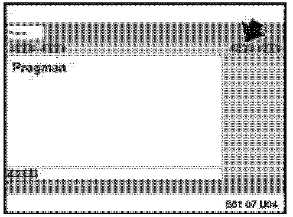

Antitheft System - EWS Coding and Alignment
SI B 61 06 07General Electrical Systems
June 2007
Technical Service
SUBJECT
EWS Replacement, Coding and Alignment
MODEL
E36 (3 Series)
E38 (7 Series)
E39 (5 Series)
E46 (3 Series)
E52 (Z8)
E53 (X5)
E83 (X3)
E85, E86 (Z4)
SITUATION
When replacing an EWS (Electronic immobilizer), only use the latest version of Progman for coding and alignment. DIS V44 must not be used as this may result in a "No start" complaint after the vehicle has been returned to the customer.
PROCEDURE
1. Use the test modules in DISPlus/GT1 to confirm the need to replace the EWS module.
2. Do not remove the module from the vehicle. If module and keys are being replaced, use the original key.
3. Start a Progman session using the latest Progman version.
- At the initial Menu screen, select "Load software"
- At the screen "Have control modules been replaced", answer "No"
- At the module selection screen, select "EWS"
- Press "Continue" at the screen that confirms the original (faulty) module is still installed, in order to read and store the control module data.
- Terminate the Progman session.
4. Refer to the EPC to confirm the replacement EWS is the correct part number for the vehicle model and model year.
5. Remove and replace the EWS control module - refer to Repair Instructions 61 35 910 (Removing and installing/replacing control unit of electronic immobilizer). If module and keys are being replaced, use the replacement key.
Note:
For E46 produced before 9/2000, see also SI B61 30 06 (Engine No Longer Starts After EWS 4.3 Installation)
6. Start a new Progman session
- At the initial Menu screen, select "Load software"
- At the screen "Have control modules been replaced", answer "Yes"
- At the module selection screen, select "EWS" in order to create a measures Plan.
- Follow the on-screen prompts and the EWS will be coded (Encoded) and aligned (EWS Calibration
- Check the Final Report to confirm all operations were completed successfully (Green check marks)
- Print the Final Report and store in the vehicle file.
For more details on the module replacement and coding process, refer to the User Documentation in Progman:

- At the Progman "Start" screen, select the "User Documentation" button as shown.
- Select option B02 (Procedure for programming and encoding BMW vehicles)
- Select the link "E36, E38, E39, E46, E52, E53, E83, E85, E86"
- In the document that follows, select the link "Software update after replacing a control unit"
WARRANTY INFORMATION
For Information only

Disclaimer